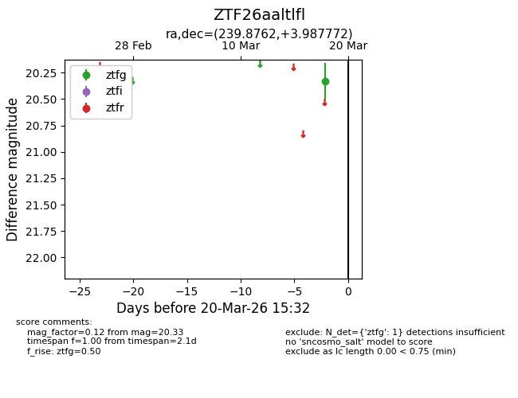
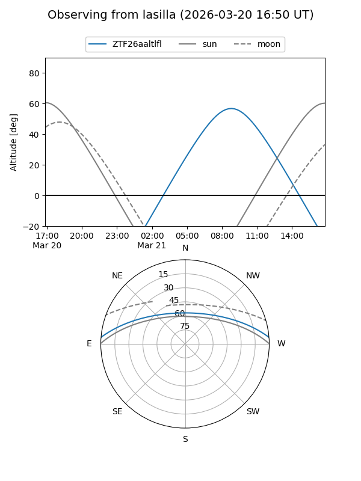
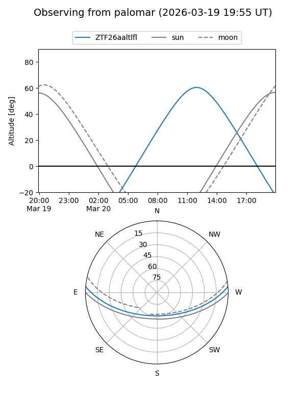

ZTF26aaltlfl
Target ZTF26aaltlfl at 2026-03-20 15:34
Aliases and brokers:
FINK: link
Lasair: link
ALeRCE: link
alt names
ZTF26aaltlfl (ztf,fink_ztf)
Coordinates:
equatorial (ra, dec) = 239.8762,+3.98777
equatorial (HMS+DMS) = 15:59:30.28,+03:59:15.98
galactic (l, b) = (14.1460,+39.57014)
Flags:
Photometry:
last ztfg=20.33
1 ztfg detections
Lightcurve

Visibility


Additional plots